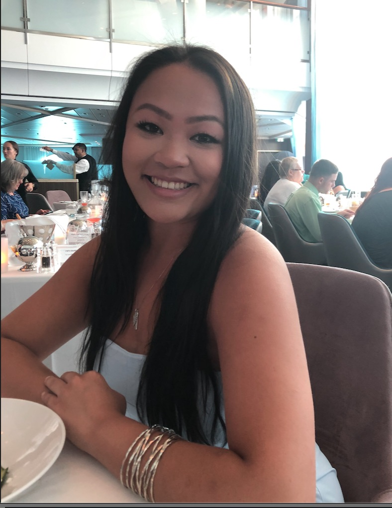

Victoria Laviola
Lyndhurst, NJ 07071
201.394.0578
laviolvj@dukes.jmu.edu

Graduate upon December 2020 with experience in Adobe Creative Suite and proven efficiency for interpersonal relations and communication; seeking an internship surrounding visual communication and interactive design.
Expected Graduation - Decemebr 2020
Bachelor of Science, Major GPA - 3.5, 3.1
Majors: Hospitlality Management and Media Arts and Design
Minor: General Business
Concentration: Interactive Design
Creative Media Intern
James Madison University , Harrisonburg VA
Management Internship
DoubleTree by Hilton , Somerset NJ
HTML5, CSS3, WordPress, Axure
Adobe Creative Cloud (Photoshop, InDesign, Illustrator, Acrobat)
Microsoft Office (Word, Excel, Powerpoint, Access)
Social Media (Instagram, Twitter, Facebook, Slack, AirTable)
Madison Dance Team - Member
National Society of Leadership and Success - Member
Christian Appalachian Project - Volunteer
SMAD Campaign – Foundations of Visual Communications
JMU School of Media Arts and Design, Harrisonburg VA
SMAD Website – Foundations of User Design
JMU School of Media Arts and Design, Harrisonburg VA